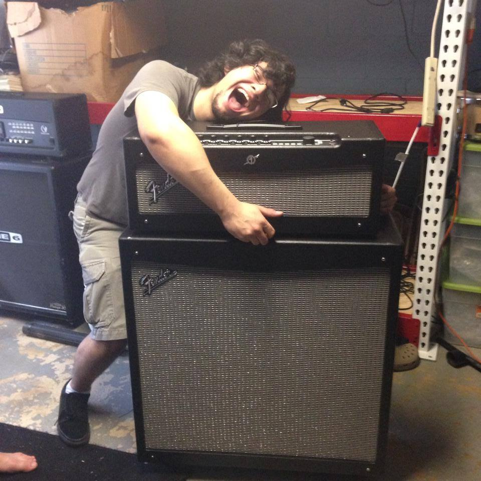

A little about the band
Abide By Lies is a punk rock/metal band from Lawrenceville, GA that formed in the summer of 2013. The band originally went under the name of That's What She Said before officially changing the name to Abide By Lies in 2015. They released their first EP, Monsters, in November of 2014 and are currently working on a few new projects that will be coming out very soon.
Pick a goofball to learn more about!
|
Shannon |
Brian  |
|
Jonathan |
Jeff |